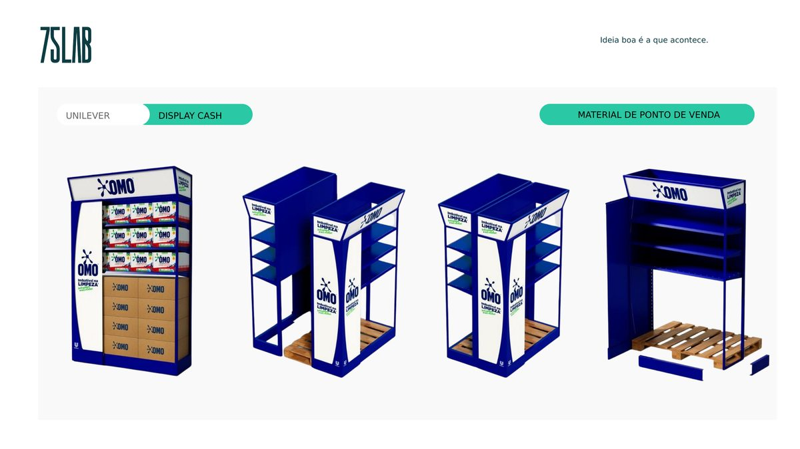
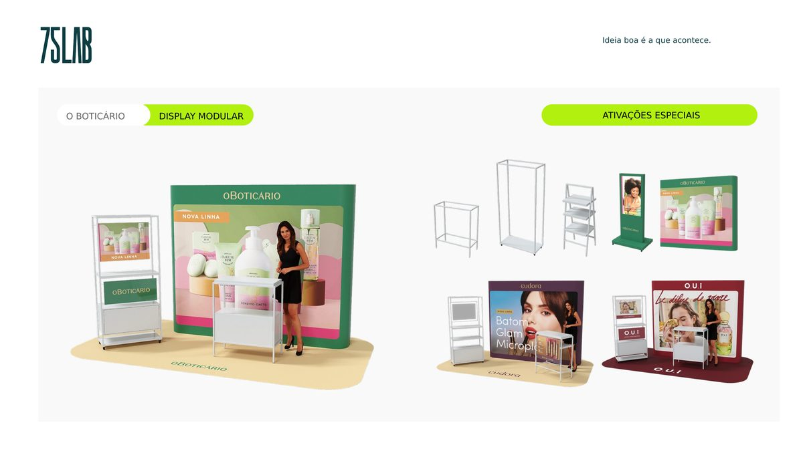
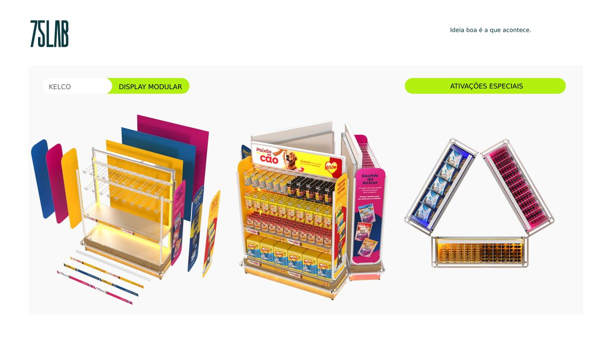
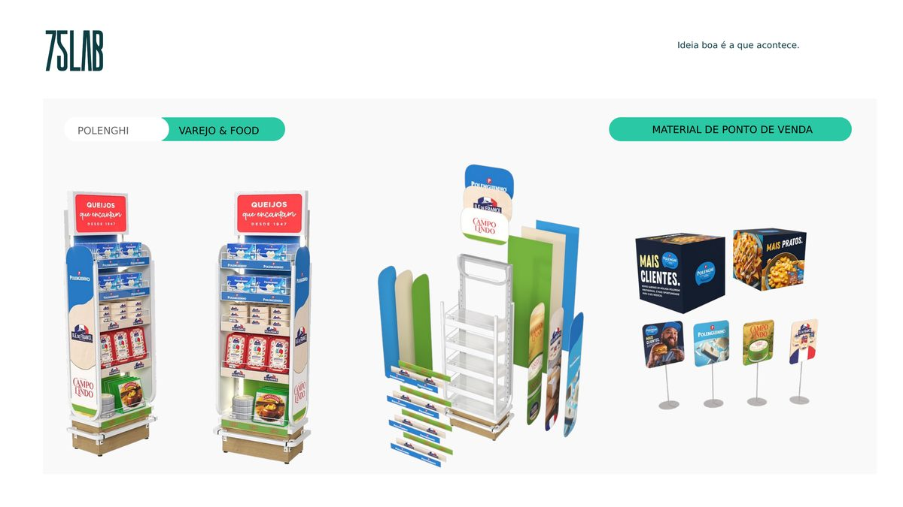
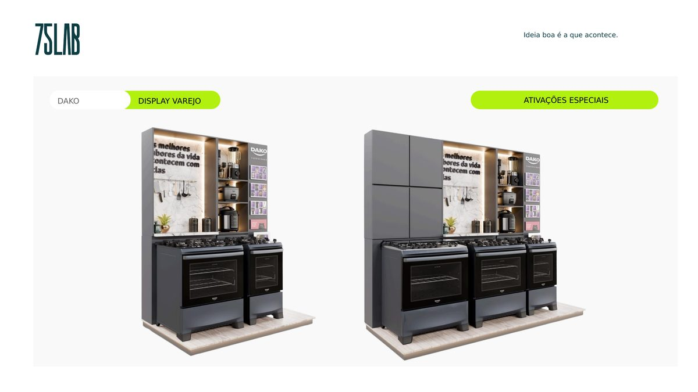
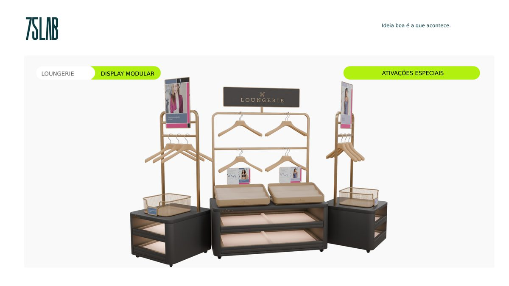

A 75 LAB faz o display de PDV inteiro: conceito, engenharia, produção com fornecedores homologados e entrega. A diferença é a prova nas duas pontas: o display é aprovado em realidade aumentada, em tamanho real, antes de gastar com produção, e cada peça pode sair com QR para registrar onde e quando foi montada.
Tipos de display que projetamos
- Display de chão autoportante, com prateleiras, gancheiras ou bandejas.
- Display de balcão para checkout, farmácia e pontos de impulso.
- Clip strip e régua de gancheira para cross merchandising.
- Display modular, reaproveitado entre campanhas trocando só a comunicação.
- Display gravitacional, que repõe o produto pela frente.
- Expositor permanente e vitrine, em MDF, metal ou acrílico.
Como o projeto anda
- Imersão: produto, peso, canal, loja, verba e prazo. É aqui que se decide o material.
- Conceito e render com a comunicação da marca aplicada.
- Engenharia: executivo técnico com vistas, cotas, materiais, espessuras, carga por prateleira e estabilidade contra tombamento.
- Aprovação em realidade aumentada: um link abre o display em tamanho real no celular, no chão da loja ou na sala de reunião. Comercial, trade e comprador aprovam vendo a peça, não um PDF.
- Produção com fornecedores homologados por processo (papelão, MDF, metal, acrílico, arame) e controle de qualidade.
- Entrega e montagem, com página de montagem e QR na embalagem para quem instala, e registro da instalação com foto e localização.
Por que a engenharia vem antes da arte
Display bonito que tomba, prateleira que enverga com o produto e peça que exige ferramenta para montar são os retrabalhos mais caros do trade, porque aparecem só na loja. Por isso todo display da 75 LAB passa por executivo técnico com conferência de carga, estabilidade, montagem sem ferramenta e transporte antes de ir para produção.
Para escolher o material, veja o guia Papelão, MDF, metal, acrílico ou arame. Para conferir estabilidade, Display que não tomba e prateleira que não enverga.
Displays que já saíram daqui






Veja também em realidade aumentada:
Perguntas frequentes
Quanto tempo leva um projeto de display de PDV?
Depende do material, da quantidade e da complexidade da peça. Na primeira conversa a 75 LAB devolve o cronograma com as etapas de conceito, engenharia, aprovação em AR, produção e entrega, para você planejar a campanha de trás para frente.
Preciso ter o arquivo 3D para ver o display em realidade aumentada?
Não. Se a sua marca já tem o 3D, nós o convertemos para AR. Se não tem, o modelo nasce no nosso projeto. O link abre no iPhone e no Android pelo navegador, sem instalar aplicativo.
A 75 LAB fabrica o display?
A 75 LAB projeta e coordena a produção com uma rede de fornecedores homologados por processo, com controle de qualidade e um responsável único do briefing à entrega. Você contrata um projeto, não uma lista de fornecedores.
Dá para reaproveitar o display em outra campanha?
Sim, quando ele nasce modular. A estrutura fica e muda só a comunicação. O Display Universal que adaptamos para quatro marcas da NGV é um exemplo: o mesmo módulo, com arte e ferragem diferentes por marca.
Como saber se o display foi montado na loja?
Cada peça pode sair com QR. Quem instala abre a página de montagem, registra loja, foto e localização, e a marca acompanha tudo num painel com mapa. Veja rastreamento de material de PDV.